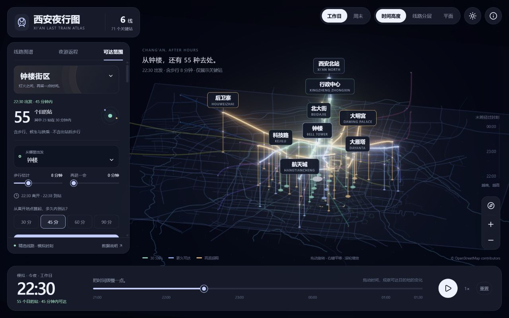
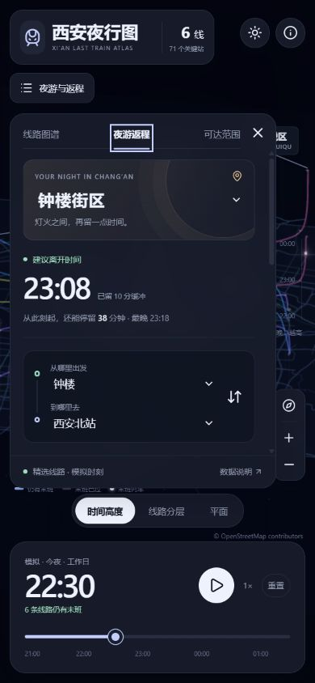

01
RESEARCH TO INTERACTIVE DEMO
西安夜行图 · 从时间的高度看见城市
交互参考東京終電図画面来自我们的西安原型


01 / 能力时间 × 城市线网
用时间轴、三维高度与亮暗变化呈现末班连接。
02 / 效果看见“还能去哪里”
真实地理底图上高亮站点、线路与返程结果。
03 / 场景夜间交通的解释与展示
适合场馆散场、夜游信息和交通网络研究。
04 / 扩展景点路线与步行导览
亦可面向活动接驳、夜班通勤；需真实数据。
05 / 对我的意义沉淀时空交互能力
复用视觉与计算方法，检验具体业务需求。
西安夜行图 · 6 条演示线路 / 71 个关键站演示班次与步行时间为模拟数据，不用于实际乘车。